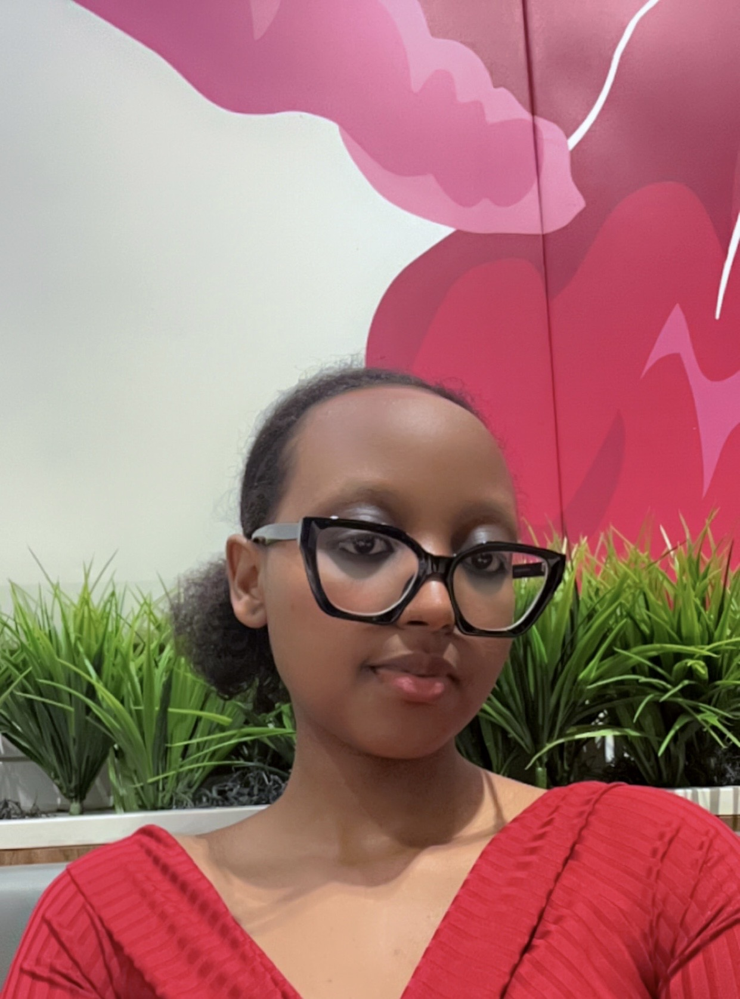

About Me
Hello! My name is Isimbi Rehema. I am a second-year student at Ontario Tech University studying Networking and IT Security. I chose this field because I am passionate about building and protecting digital systems. I enjoy creating secure networks and helping to protect people’s privacy online.
I am working towards becoming a Cloud Engineer. I am especially interested in cybersecurity, cloud architecture, and leadership roles. I believe technology can be a powerful tool for good. That is why I have a long-term goal of opening a non-profit organization to help children with disabilities learn Information and Communication Technology (ICT) skills. I believe everyone deserves the chance to access technology, and I want to help create those opportunities.
I am a curious learner who enjoys solving problems and taking on leadership roles in team projects. I see Information Technology not only as a career but also as a way to make a positive impact in people’s lives and improve the systems that we all rely on.